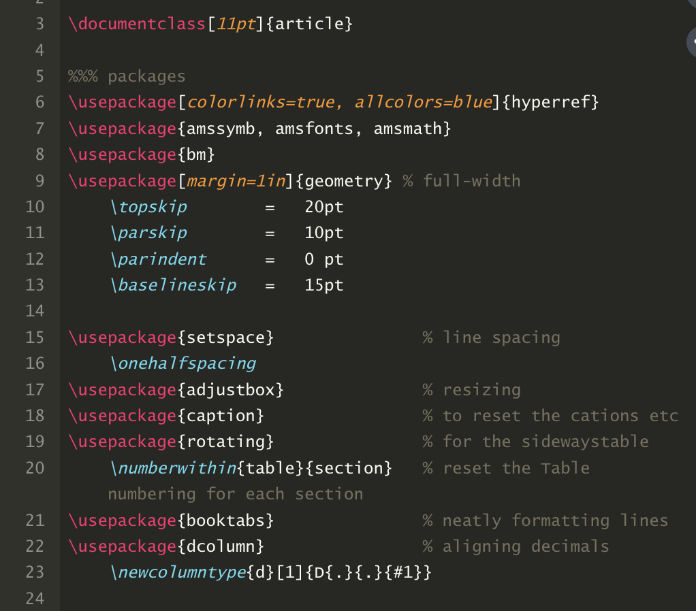

library(stargazer)Making Tables with R
Exporting R Tables to LaTeX and Word
This guide will cover the basics of exporting summary statistics and regression coefficients from R to formatted tables in LaTeX and Word. There are several ways to create LaTeX tables using R, but I’m going to focus on using the stargazer package for this tutorial. You can download an R Script file that contains all of the code I used to generate the table examples here.
The Setup
R
First, you’ll need to load the stargazer package in R (be sure to install the package before trying to load):
LaTeX
You’ll also need some way to compile LaTeX files. Overleaf is probably the most commonly used compiler, though you could also download a compiler, like TeXLive to your computer. I recommend Overleaf because it stores all of your projects online and makes for easy collaboration.
You’ll need to add the following packages to your LaTeX preamble in order to compile the tables in this guide. These packages need to be added in addition to any other packages you need to compile your document.

Word
There is no setup to do in Word. We’ll export R tables to .rtf files and you can open these files directly in Word.
Summary Statistics Tables
Run the following R code that uses the webuse package to load an example data set and tabulate some basic summary statistics. Again, you’ll need to be sure the webuse package is installed before trying to use it.
webuse::webuse("census")
library(dplyr)
census <- as.data.frame(census)
vars <- c("pop", "pop65p", "death", "marriage", "divorce")
for (i in vars) {
census[[i]] <- census[[i]] / 1000
}
mydata <- census %>%
select(pop, pop65p, medage, death, marriage, divorce)
library(stargazer)
stargazer(mydata,
type = "latex",
out="table_1.tex",
header = FALSE,
float = FALSE
)Here we’re loading the sample tibble census and converting it to a data frame using the as.data.frame() command (this is necessary because stargazer works with data frames and not tibbles). The for loop is dividing each variable by 1,000. Then we’re using the select command to choose which variables we want to include in our summary statistics table. Finally, we use the stargazer command to create the LaTeX summary statistic code telling R that we want to save the .tex file in the working directory. The float = FALSE option removes some LaTeX table header statements that I prefer to control directly in LaTeX instead of having them as part of the table output and the header = FALSE option removes a citation note from the .tex output.
This table looks ok, but let’s make some adjustments. First, let’s move the number of observations column so that it’s the last column in the table instead of the first column. Second, let’s change the variable names so that they are more informative and limit the number of decimal places to 2.
stargazer(mydata,
type = "latex",
out="table_2.tex",
header = FALSE,
float = FALSE,
digits = 2,
summary.stat = c("mean", "sd", "min", "max", "n"),
covariate.labels=c("Population", "Pop, 65 and older", "Median age", "Number of deaths",
"Number of marriages", "Number of divorces")
)Unfortunately, there’s no way that I know of (at least no easy way) to change the column labels in stargazer’s basic summary statistics table. So, for now, I think this is the best we can do.
Oftentimes we want summary statistics tables that compare characteristics for a treatment group and a control group. Run the following R code that designates certain states in the census data as “treated” states and the others as “control states”. The following code will generate a treatment vs. control summary statistics table that displays the mean and standard deviation of the variables of interest and presents the information in the standard format of estimate over the standard deviation.
A note of caution here. This code is extremely hacky and there’s probably a much better and more efficient way to accomplish what I’m doing here. However, I have yet to find the more elegant solution and so am providing code that will get the job done.
summary_stats <- census %>%
mutate(treat = ifelse(state %in% c("Louisiana", "Texas", "Arkansas", "Mississippi"), 1, 0)) %>%
group_by(treat) %>%
summarise(
Population = format(round(mean(pop, na.rm = TRUE), 2), nsmall = 2),
sd_pop = format(round(sd(pop, na.rm = TRUE), 2), nsmall = 2),
`Pop, 65 and older` = format(round(mean(pop65p, na.rm = TRUE), 2), nsmall = 2),
sd_pop65p = format(round(sd(pop65p, na.rm = TRUE), 2), nsmall = 2),
`Median age` = format(round(mean(medage, na.rm = TRUE), 2), nsmall = 2),
sd_medage = format(round(sd(medage, na.rm = TRUE), 2), nsmall = 2),
`Number of deaths` = format(round(mean(death, na.rm = TRUE), 2), nsmall = 2),
sd_death = format(round(sd(death, na.rm = TRUE), 2), nsmall = 2),
`Number of marriages` = format(round(mean(marriage, na.rm = TRUE), 2), nsmall = 2),
sd_marriage = format(round(sd(marriage, na.rm = TRUE), 2), nsmall = 2),
`Number of divorces` = format(round(mean(divorce, na.rm = TRUE), 2), nsmall = 2),
sd_divorce = format(round(sd(divorce, na.rm = TRUE), 2), nsmall = 2)
)
summary_stats[, grepl("^sd_", colnames(summary_stats))] <-
apply(summary_stats[, grepl("^sd_", colnames(summary_stats))], 2,
function(x) paste0("(", x, ")"))
summary_stats <- summary_stats %>%
arrange(desc(treat)) %>%
select(-1)
names(summary_stats)[names(summary_stats) == "sd_pop"] <- " "
names(summary_stats)[names(summary_stats) == "sd_pop65p"] <- " "
names(summary_stats)[names(summary_stats) == "sd_medage"] <- " "
names(summary_stats)[names(summary_stats) == "sd_death"] <- " "
names(summary_stats)[names(summary_stats) == "sd_marriage"] <- " "
names(summary_stats)[names(summary_stats) == "sd_divorce"] <- " "
stargazer(summary_stats,
type = "latex",
out="table_4.tex",
header = FALSE,
float = FALSE,
digits = 2,
summary = FALSE,
mean.sd = TRUE,
flip = TRUE,
covariate.labels = c("", "Treatment", "Control"),
)This tutorial is still a work on progress. More to come on exporting regression tables from R to LaTeX.